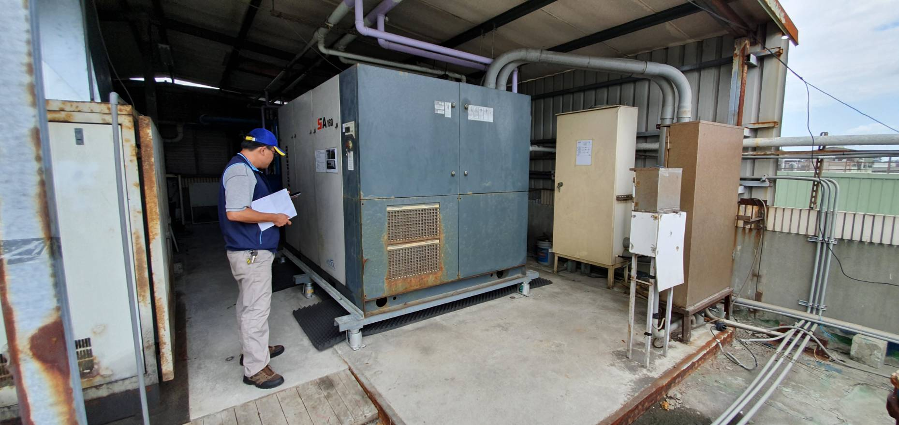
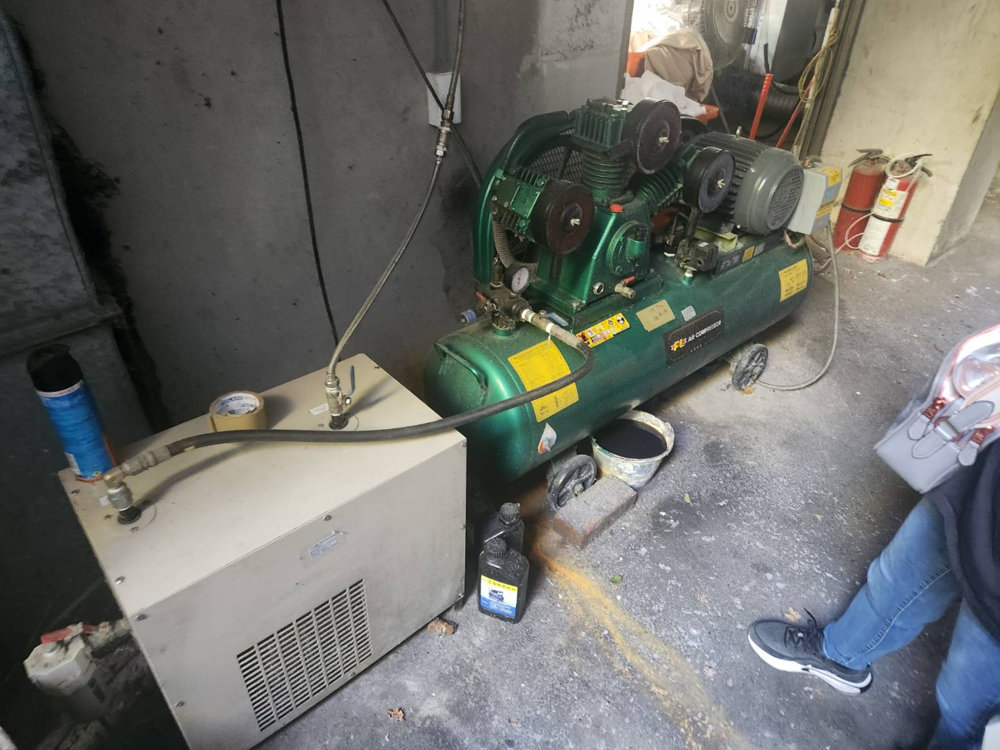

空壓機噪音改善的核心，通常不是把設備完全封死，而是先確認設備放在哪裡，再把隔音、通風散熱、進排風消音與腳座減震一起規劃。小型空壓機與大型工業空壓機，處理方式會有明顯不同。

空壓機本身的噪音來源並不算最複雜，真正決定工程方式的，常常是「設備放在哪裡」。同一台設備放在獨立機房，和放在工廠開放區，改善策略完全不同。
如果空壓機已經放在機房內，通常先把機房當作第一層隔音。常見做法是提高門體與門縫的隔音性能，進排風口則使用消音百葉、消音箱或聲學風道，最後再從設備腳座補上隔振措施，減少振動傳到地坪與牆體。
這一類案件通常不需要把設備本身再包得很複雜，反而是門、風口與結構硬接點比較值得先檢查。
較大型的渦捲式、螺旋式或往復式空壓機，不一定會有獨立機房，有時直接放在生產區、廠房角落或半戶外空間。這時可評估做隔音罩、半封閉箱體或另外建立獨立隔間，將設備聲源與人員工作區分開。
但任何箱體只要需要散熱，就一定有進排氣，因此通風消音必須和隔音箱體一起設計。

空壓機運轉會產生熱量，尤其大型設備長時間運轉時，散熱條件不能被犧牲。因此隔音罩的問題往往不是板材夠不夠厚，而是進氣、排氣與維修開口怎麼處理。
若進排風口做得太小，雖然聲音可能降低，卻可能造成散熱不足、風量衰減或設備溫度升高。因此噪音改善不能只看降幾分貝，也要確保設備能正常運轉。
馬達、壓縮機構、冷卻風扇與機殼振動形成主要設備聲。可利用機房、隔音罩或空間區隔降低直接傳聲。
通風口往往是隔音系統最明顯的漏音點。需利用消音百葉、消音箱或轉折式聲學風道，同時保留所需風量。
設備振動會經底座與地坪進入建築。橡膠、彈簧或其他隔振元件需依重量、轉速與重心選型。
高壓空氣管、法蘭、支架、牆面穿孔與固定點，都可能形成旁路傳振。腳座做了避震，不代表整套系統就已經隔振。
吹鐵屑、吹粉塵、清潔或製程冷卻使用高壓空氣時，噴嘴出口會形成高速氣流聲。這往往屬於製程聲源，不等同空壓機本體噪音。
電磁閥、控制閥與儲氣系統洩壓可能產生短時間但很尖銳的排氣聲。改善前要確認背壓、安全與設備功能，不能任意把排氣口堵住。
工廠常用壓縮空氣吹鐵屑、粉塵、工件或模具。這種高壓氣體經小口徑噴嘴高速排出時，噪音可能比空壓機主機本身更刺耳。但它通常是製程的一部分，不能只從聲音角度決定要不要改。
同樣的原則也適用於控制閥洩壓與排氣。它有時是設備安全或控制邏輯的一部分，應先確認排氣量、動作頻率、背壓限制與原廠要求，再談是否能增加消音元件。
確認渦捲、螺旋、往復或其他型式，以及是否連續運轉、負載變化與卸載頻率。
判斷是已有機房、開放廠房或半戶外空間，並確認人員或鄰近住戶在哪裡受影響。
確認冷卻風量、進排氣方向、可用空間與允許壓損，避免隔音後造成過熱。
檢查腳座、軟接、高壓管路、固定架與穿牆點，避免聲音或振動繞過隔音罩。
隔音門＋牆體檢查＋進排風消音百葉／消音箱＋腳座減震。適合小型或已經有獨立機房的空壓機。
隔音罩或獨立隔間＋吸音內襯＋進排風消音＋維修門＋設備減震。適合較大型工業空壓機。
確認設備腳座、管路軟接、支架與結構傳振，不要只在外殼貼吸音材料。
先確認吹氣、洩壓是不是製程必要功能，再從不影響壓力、背壓與安全的方向評估改善。
先看機房隔音門與門縫，再看進排風開口是否直接漏音，必要時加入消音百葉或消音箱；設備腳座則補上適合的隔振措施。
可依現場空間設置隔音罩、半封閉箱體或獨立隔間，但必須同步規劃散熱與進排風消音。
不是。空壓機需要換氣與散熱，過度密閉可能造成溫度升高。應以聲學風道、消音百葉或消音箱處理通風開口。
高壓空氣從小孔高速釋放會形成強烈氣流噪音。若它是製程必要條件，改善前必須先確認不影響吹除效果、產品品質與安全。
不一定。需先確認背壓、排氣量、動作頻率與原設備安全要求，不能只為了降噪增加阻力。
不一定。隔振材料需要依設備重量、轉速、重心與激振特性選擇，管路若仍是硬接，也可能形成旁路傳振。
優先檢查進排風開口、維修門縫、管線穿孔、冷卻風扇、腳座與管路固定點，而不是只繼續把隔音板做厚。
多數案件最後都回到四件事：空間隔音、進排風消音、散熱、減震。製程吹氣與洩壓則另外視為獨立聲源評估。
先提供設備全景、銘牌、進排風位置、腳座與受影響位置照片，我們可以先判斷比較像機體聲、通風漏音、製程排氣，還是結構傳振，再決定是否需要現勘。
工業噪音振動部 0983-057-746